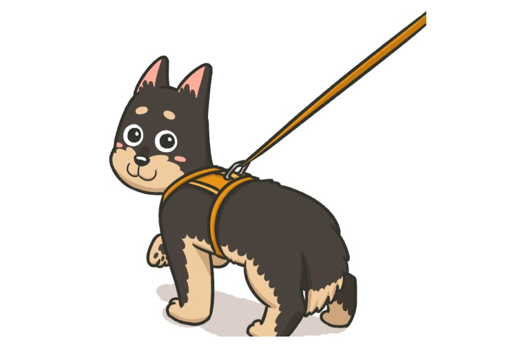
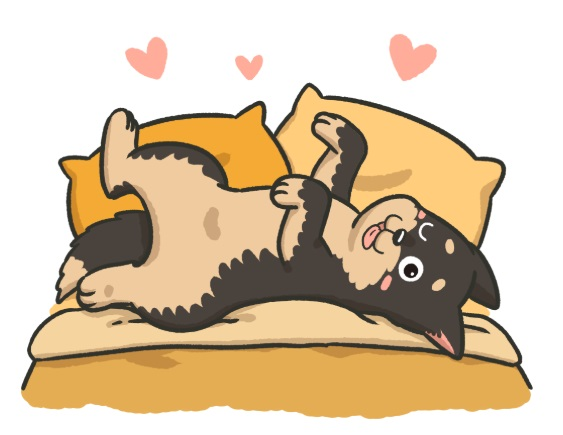
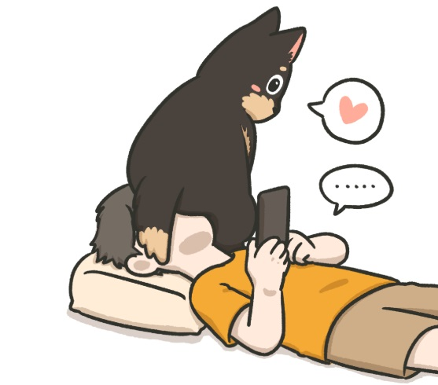
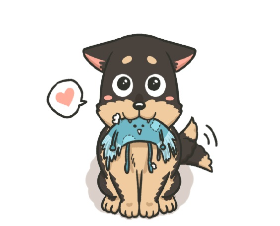
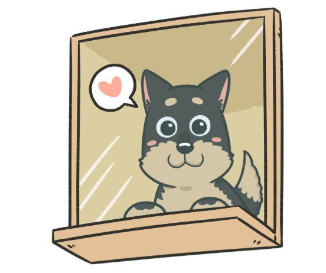
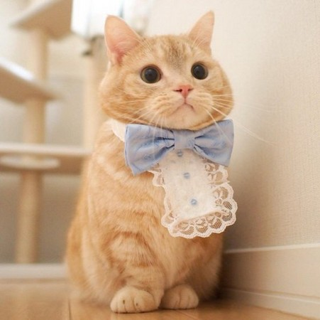
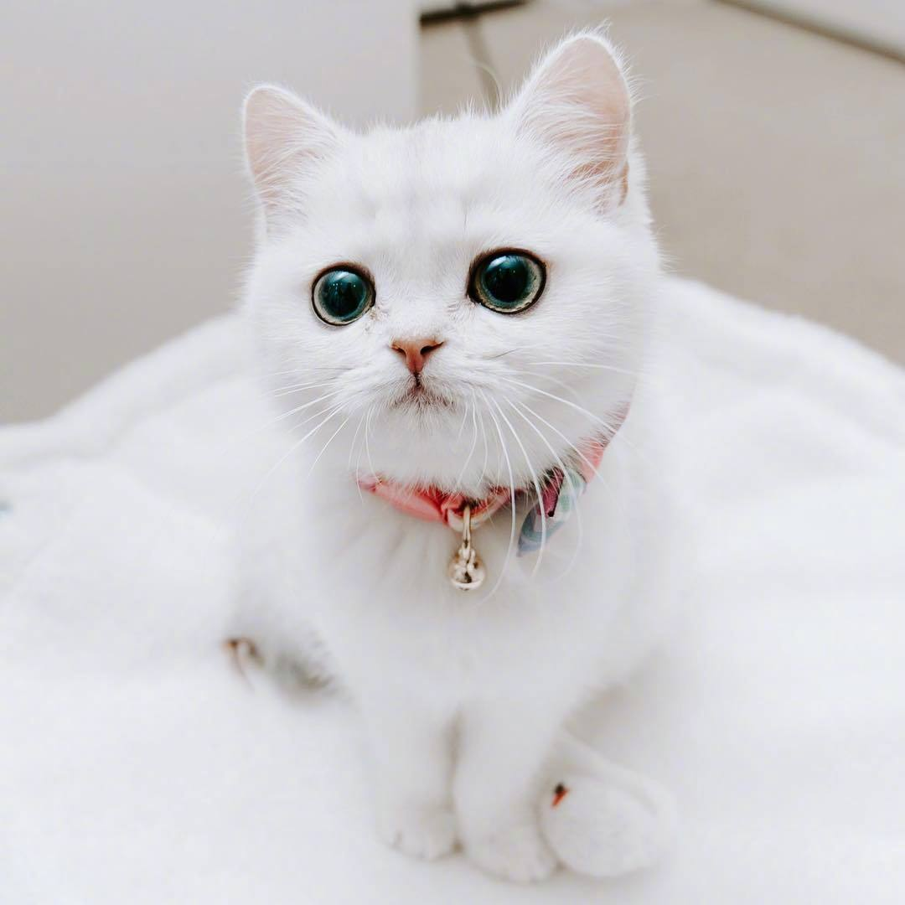
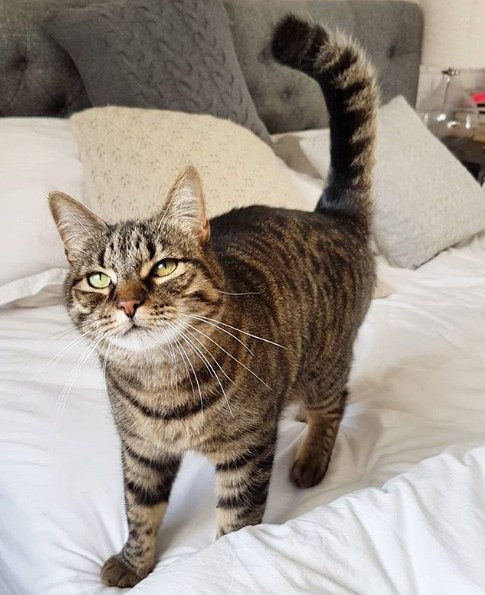
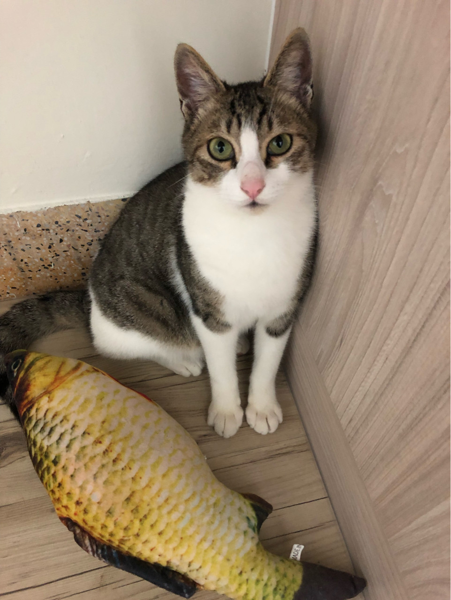
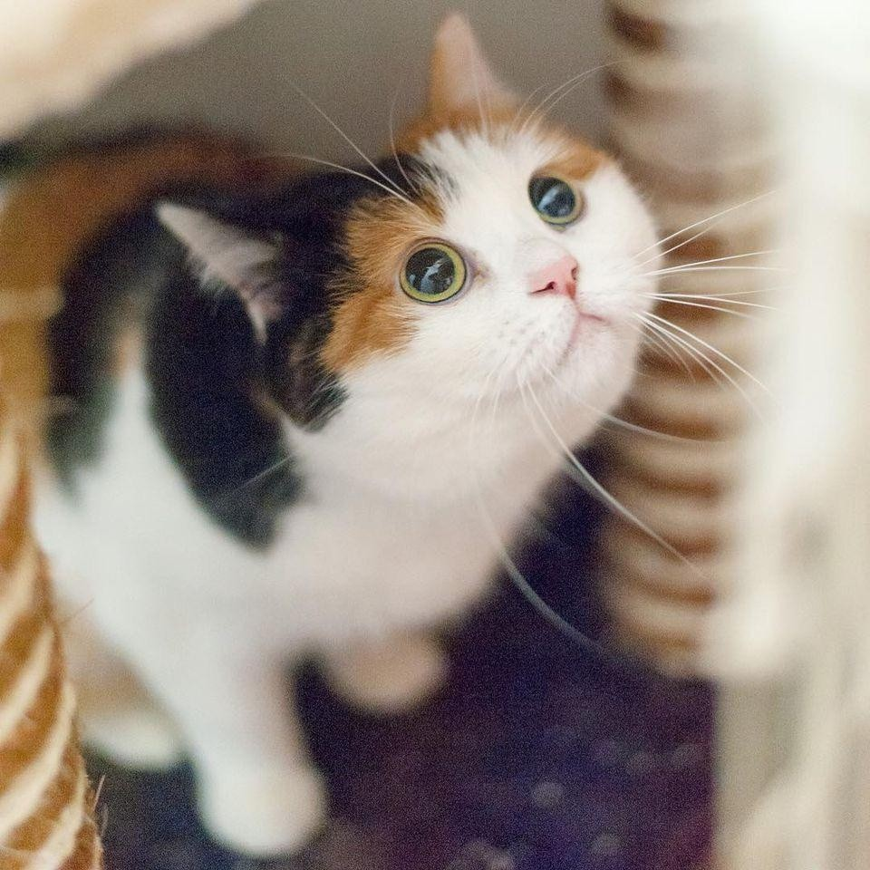

| 1.散步時回頭看你 帶狗狗散步的時候，如果他走幾步就回頭看你而且帶著笑意  |
2.霸佔你的床 狗狗是群居動物，當他跑到床上、跟你緊緊黏在一起，表示  |
3.用屁股靠著你 狗狗對看不到的地方會感到恐懼，屁股因此是狗狗最脆弱、  |
| 4.把玩具咬到你面前 狗狗會把沾滿口水的玩具（或是小動物…）咬到你面前，除  |
5. 平靜地看著你出門 平常超黏人的狗狗，在你出門的時候，居然平靜地看著你  |
| 1.️ 全色貓 從生物遺傳學來看，貓咪其實只有「真黑」、「嗜鉻黑」兩種  |
2.白貓 白色其實不算花色，遺傳學角度來說，白貓算是種「全身  |
3.虎斑貓 虎斑貓是身上擁有規律花紋的貓，牠們的共同特徵是在前  |
| 4.多層色貓 又被稱「野鼠色」，算是虎斑的一種，只是斑紋不太明顯， |
5. 雙色貓 顧名思義，就是擁有兩種毛色表徵的貓貓，例如：同時  |
6.️三色貓 & 玳瑁貓 玳瑁是同時被「真黑」、「嗜鉻黑」兩種色素影響的貓貓，  |